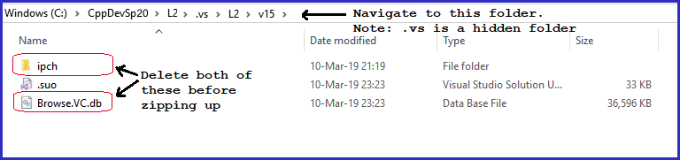

On or before the Lab assignment's appointed due date (see Moodle assignment for exact due date) turn in your Lab X by doing the three steps listed below.
Note: substitute L1, L2, etc., for LX in the following. For example, if you are working on Lab 1, substitute L1 for LX.
Build | Clean Solution
3. Create a .zip of your assignmentNavigate to the 4. Upload the .zip to the Moodle assignmetUpload the .zip created in Step 3 (above) |